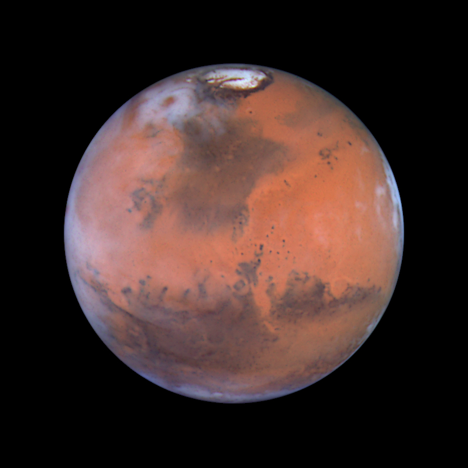
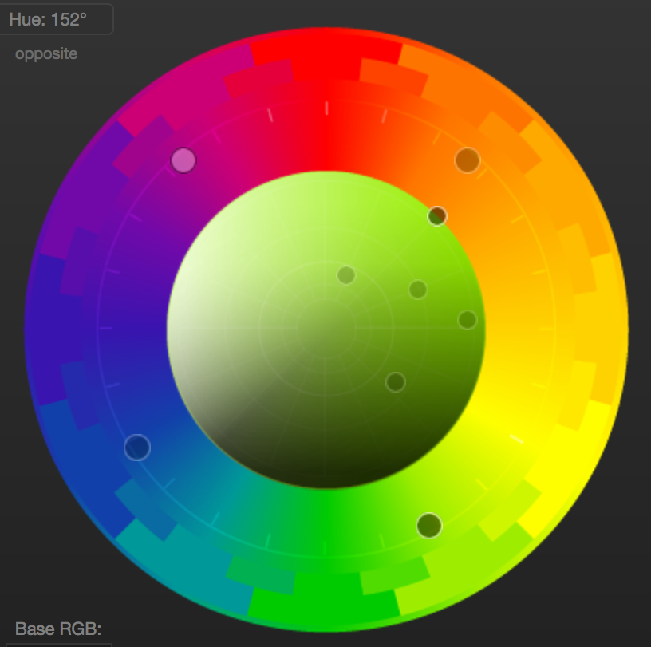

Wikpedia page of the month ◦ May
 Enceladus is a moon of Saturn that is approximately 500 km (310 mi) in diameter that is entirely covered by ice, making it an extremely reflective body in the solar system, and has a subsurface ocean. This was confirmed by observations of the large plumes spewing from the sourhtern polar surface, determined to be mostly water, with a small amount of hydrogen molecutles. The exhaust from these jets (250 kg of water every second) is shot out at up to 2,189 km/h (1,360 mph), immediatley freezes in space, and is caputured by Saturn's gravity, forming the E Ring.
Enceladus is a moon of Saturn that is approximately 500 km (310 mi) in diameter that is entirely covered by ice, making it an extremely reflective body in the solar system, and has a subsurface ocean. This was confirmed by observations of the large plumes spewing from the sourhtern polar surface, determined to be mostly water, with a small amount of hydrogen molecutles. The exhaust from these jets (250 kg of water every second) is shot out at up to 2,189 km/h (1,360 mph), immediatley freezes in space, and is caputured by Saturn's gravity, forming the E Ring.
Almanac
A glossary of terms and tools that I frequently use
A
-

Ancient Greek playwrite often described as the father of tragedy. Famous for The Oresteia, which is the only surviving example of a complete trilogy (the go-to format). Seven of his tragedies have survived intact and all of those won first prize at the City Dionysia (well documented yearly theatrical competition in Athens dating back to the 6th century BC).
-
The end of the world with possibilities for the impetus (including many of our own creation). The New Yorker wrote an article about how super wealthy tech moguls and entrepreneurs are prepping for Doomsday.
-
Court in ancient Athens used for trying homicide. Translated from the original greek Areios Pagos as "Ares Rock." It makes an appearence in the The Eumenides of The Oresteia by Aeschylus (see entry) as the site of the trial of Orestes for killing his mother Clytemnestra and her lover Aegisthus.
-
Source of images and other content in the public domain. Easily search by license.
-
Any agent that is capable of percieving it's environment and making goal oriented acitons. Currntly being pursued in many different ventues including autonomous driving, computer assistants, and infallible game players.
B
-
- ◦ Harry Potter by J.K. Rowling
- ◦ The Lord of the Rings by J.R.R. Tolken
- ◦ The Picture of Dorian Gray by Oscar Wilde
- ◦ Ready Player One by Ernest Cline
- ◦ The Player of Games by Iain M. Banks
- ◦ The Brothers Karamozov by Fyoder Dostyevsky
- ◦ Contact by Carl Sagan
-
Battery technology is becoming increasingly important as we consume power off the grid (whether in our phones/computers or electric vehicles) and right now they play a central role in renewable energy thanks in part to efforts by Tesla to commotize a self-sustaining in house electrical system. Here is an excellent primer.
C
-
One of the central unanswered questions in neuroscience is what gives rise to consciousness? It is also an issue that consciousness is not extremely easy to define and there are many interesting hypotheses dating back to Cognito ergo sum and other such classics of philosophy. Stephen Pinker has developed an interesting theory about consciounsess arising from synchronisity between neurons across brain functions.
-
Carl Sagan was a pioneer of cosmology and one of the world's first scientific celebrities. Along with his wife, Ann Druyan, he produced a TV series to educate the American people on the known universe and the questions facing modern cosmologists (my favorite of which being the Fermi paradox).
D
-
'God from the machine' used to mean a plot device where a previously unsolvable problem is resolved by the abrupt intervention of some new power, character, ability, or object (e.g. the eagles at the end of Lord of the Rings).
-
A class of machine learning algorithms that uses layers for feature extraction (i.e. to find patterns). The input of each successive layer is the output from the previous one. Google's AlphaGo beat the world chamption in Go in March 2016 using deep learning enabled by an artifical neural network.
E
-
A way to search through photos in the public domain from combined sources including Wikipedia Commons, Flickr, and NASA.
F
-
The observation that the observable universe has hundreds of millions of galaxies, which in turn have hundreds of millions of stars, any of which could support planets that sustain life. Given that intelligent life evolved on earth and the planet is relatively young in the universe (4 billion years out of the 14 billion since the big bang) it follows that another planet somewhere in the universe has also evolved intelligent life. The paradox is that we have not decerned any trace of an extraterrestrial civilization; as Enrico Fermi asked in 1950, "where is everyboy?"
G
-
A tool to query data and create interactive visualizations; the brainchild of Hans Rosling.
-

A form of social manipulation where the victim is forced the question the nature of their own reality. Based on a Hitchcock film.
H
-
Expert on the neuroscience of dreams. In his studies he has kept extensive dream diaries and often cites them in his work which is incredibly entertaining and will have you realizing just innate everthing in a dream is.
-
The seat of memory as well as spatial awareness, the hippocampus is an extremely interesting neural structure. People with damaged hippocampi experience an inability to create new memories and very poor spatial reasoning ability (i.e. walking out of a hedge maze). There is a lot of interesting research being done on the mechanisms of the hippocampi and what role they play in larger cognitive functions.
-
People with HSAM remember every detail of their life perfectly archived by date. 60 minutes did a great interview and it really is astounding. If you have ever read Funes the memorious by Borges this may feel eerily familiar
K
-
An acclaimed futurist whose books The Age of Spiritual Machines and The Singularity is Near predict an age where humans merge with our technology in order to overcome out biology (i.e. implant millions of blood-borne nanobots to regulate and repair our body from the inside - hooked up to a personal network with a neural interface connected to the internet).
-
An expert in human memory and a delightful neuroscientist, Kandel's work In Search of Memory laid the groundwork for our understanding of the mechanisms of memory.
L
-
A contributer at Bloomberg with a sharp wit and excellent engagement with his readers. If you are interested in finance I highly reccommend reading his column.
M
-

The planet in our solar system best suited for colonization. While it is currently uninhabitable due to subzero temperatures and toxic levels of carbon dioxide, Mars previously had an earth-like atmosphere and it would be possible to terraform it to make the conditions akin to earth. Until then, it will soon be possible to live on Mars in engineered habitats (known as habs) located in the subterranean tunnels left by previous volcanic activity. A self-sustaining colony on Mars will 1 million people is the mission of Elon Musk's company SpaceX.
-
A method of memorization where you imagine a physical space and then populate it with cues to the items you need to memorize. It is used in by championship competitors to commit the order of multiple decks of cards to memory.
-
- - Amadeus
- - The Matrix (I/II)
- - Ace Ventura: Pet Dectective
- - Zoolander
- - Auntie Mame
- - Lord of the Rings
- - Alien
-

Founder of Tesla, SpaceX, and Neuralink, he is a pioneering entrepreneur working to develop species-saving technology in renewable energy, space exploration, and artificial intelligence.
O
-
Excellent database of all OECD countries including historical data.
P
-

Useful tool for selecting and saving color schemes. I have a vast amount of appreciation for people who are able to match colors well and I enjoy cruising templates uploaded by other people. If I'm really desperate, I'll use ColorPicker on a Van Gogh painting and get shades of complimentary colors. Here's the template for this site
-
Great vizs for political data.
-
Python library that allows web-based data vizs.
R
S
-
Probably the most famous neuroscientist of our time and for good reason. While Sacks is most well-known for The Man who Mistook his Wife for a Hat he has written extensively on many different topics including the sensations that drugs induce on the brain (ranging from cannabis to lyseric acid).
-

Mortal Kombat meets Street Fighter as your choice of 8 famous scientists including Albert Einstein, Charles Darwin, Nikola Tesla, Isaac Newton, Stephen Hawking, Pythagoras, Marie Curie or Alan Turing all equipped with their own attack based on their scientific specialty. Play now and FINISH HIM!
-
A phrase initially used by Vernor Vinge to describe a time when we would be advancing technology so quickly there would be a rupture in our ability to keep up with it. Ray Kurzweil has attempted to make some predicitons about the singularity based on the assumption that we will augment our own intelligence with machines in order to keep up.
-
A hypothesis that we are in fact living in a computer simulation. The arguments are interesting because they are simultaneously impossible to internalize (accept that you're living in the Matrix) and impossible to refute.
-
Regularly updated launch schedule for all spaceports around the world.
T
-

My favorite game - what my mother affectionately called waste your time.
-
The idea that humans will transcend our biology by augmenting our bodies with technology like a neural link to the internet and blood-borne nanobots that maintain physiological systems. There is a council that includes Kurzweil and Rothblatt.
W
-
Dope blog run by Tim Urban. I recommend the posts on Superintelligence, The Fermi Paradox, and the Elon Musk series.
-
The best thing on the interent
-
Data and reports.